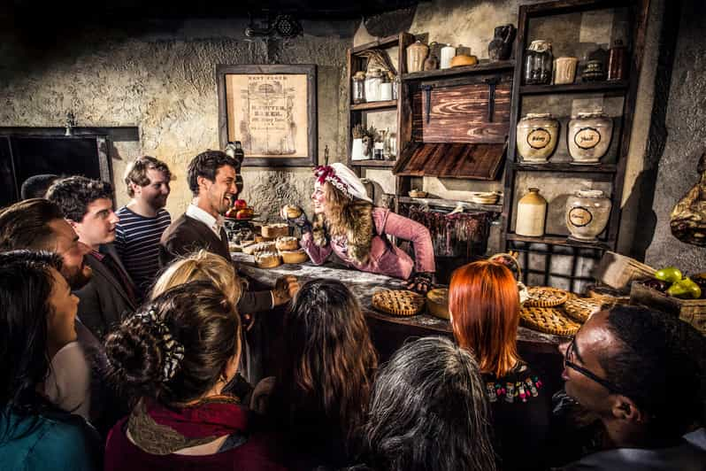

Overview
I visited the London Dungeon, an attraction that combines historical education with horror entertainment. The dungeon recreates the dark history of London, including the Great Plague, the Great Fire of London, executioners, and various medieval punishment scenes, through immersive interactive experiences, live actors, sounds, and special effects.

The design of the dungeon cleverly combines the concepts of space and time, making visitors not just watch history but feel like they are in it. Each scene is accompanied by live actors who interact with visitors, creating a thrilling and immersive experience through asking questions, guiding, and sudden scares. For example, when entering the plague scene, actors would randomly select visitors to “check” their health. This face-to-face interaction made me feel nervous and very immersive, as if I were really facing a life-or-death situation. This immersive experience is more profound than a simple historical explanation, allowing people to vividly understand the horror and impact of historical events.
During the court trial session, visitors were invited to play the role of criminals and were required to confess their “crimes”. I was selected, and the actor playing the judge “tried” me in an exaggerated and jocular tone, attracting the attention and laughter of surrounding visitors. This role-playing made visitors not just spectators but also participants, breaking the traditional boundary between the audience and performers in an attraction. Through this interaction, each visitor could experience a unique “dungeon experience”, as if really undergoing a medieval trial, making me realize the huge impact of role interaction on the visitor experience.
The sound and visual effects in the dungeon also greatly enhanced the sense of interaction. When entering some rooms, the doors would automatically close, accompanied by hurried footsteps, screams, and laughter. These sounds made people instinctively quicken their steps, creating a sense of being chased. There was also a scene of gunpowder explosion, with flame and smoke effects accompanied by rumbling sounds, and the floor even vibrated. In the dark, there was the smell of “burning” flames, making people feel as if they were in a fire scene. These sensory stimuli increased the authenticity of the experience, breaking the single visual interaction and making each scene full of dynamic and all-round interaction.
The actors in the dungeon would observe the reactions of the audience during the performance and make improvisations and interactions accordingly. For example, if some visitors recoiled in fear, the actors would “pursue” them to increase the sense of fear. For bolder visitors, the actors would tease them in a humorous way to make them relax. The flexible reactions and improvisations of the actors made the whole dungeon experience more vivid, with a stronger sense of interaction and participation. This improvised interaction not only added fun but also allowed different visitors to experience unique content and situations.
Through interaction and role-playing, the London Dungeon not only conveys historical knowledge but also enables visitors to understand medieval life and punishment systems from the perspective of “eyewitnesses”. The design of the interaction enhances the visitors’ feelings and understanding of history, making me realize that the display combining immersive experience and interaction means is far more infectious than traditional museum education.
To sum up, the dungeon creates a realistic atmosphere through vision, hearing, and even smell, deeply attracting visitors. Such multi-sensory interaction has given me a deeper understanding of experience design, making me feel that combining technology and performance can create a real and unforgettable experience space for visitors. Meanwhile, for me, the interactive process of playing the role of a criminal and undergoing “trial” was particularly memorable, making me realize the importance of a sense of participation in the visitor experience. Role interaction is not just about adding fun but also about deepening memories. In the future, when designing interactive experiences, I will pay more attention to how to make participants truly become a part of the experience to deepen their memories and feelings of events.